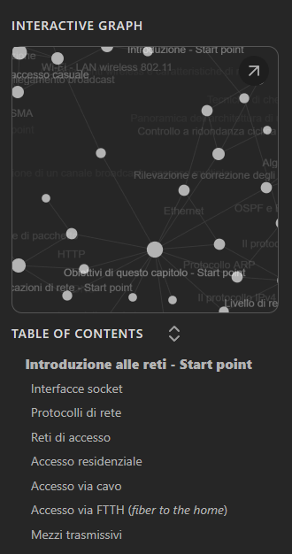

Cos'è questo sito?
Questo sito contiene degli appunti, raggruppati per corso e capitoli/sezioni utili a persone che frequentano corsi di laurea in informatica. Gli appunti sono stati scritti con Obsidian, da me: Davide Falco. Le materie sono tratte dalla laurea in informatica dell'Università degli studi di Torino, tuttavia potrebbero combaciare con diverse lauree italiane dello stesso settore. Gli appunti prendono spunto soprattutto dai libri consigliati dai docenti, i contenuti sono stati poi arricchiti da ricerche che ho dovuto effettuare per comprendere bene le nozioni affrontate. Se volete scaricare in locale i file per poterli navigare offline, potete clonare la repository disponibile a questo link
Guida alla navigazione degli appunti (da scrivere)
Per chi conosce Obsidian, la navigazione è identica a quella dell'applicazione stessa per computer.
Per chi non lo conoscesse, di seguito una breve guida all'uso.
Se scorrete più avanti nella pagina, troverete dei link che vi rimandano a dei punti di ingresso alle pagine con gli appunti per ciascun capitolo/parte della materia.
Una volta aperti tali link vi troverete di fronte una schermata come quella che segue.
 Per visualizzare meglio l'immagine potete aprirla in un'altra finestra.
Per visualizzare meglio l'immagine potete aprirla in un'altra finestra.
- Il riquadro numero 1 serve per abilitare/disabiltiare la modalità scura.
- Il riquadro numero 2 serve per aprire/chiudere la sidebar a sinistra.
- Il riquadro numero 3 serve per aprire/chiudere la sidebar a destra
La sidebar di sinistra elenca tutti i capitoli nella cartella della materia selezionata. Mentre la sidebar a destra (foto in basso) mostra il grafo tipico di Obsidian. Il grafo fornisce una visuale grafica di come sono collegati i documenti/argomenti tra di loro. Tra una pagina e un'altra vi imbatterete sicuramente in dei link che vi collegano con altri argomenti. La sidebar a destra contiene anche un riassunto dei contenuti della pagina in cui vi trovate.
Degni di nota
Gli appunti verranno, per quanto mi è possibile nel tempo, continuamente aggiornati e sistemati, da un punto di vista organizzativo, ma anche ortografico e sintattico. Vi prego di perdonarmi per eventuali errori ortografici e/o grammaticali.
Appunti disponibili al momento
Reti di elaboratori
CFU corso: 12
Docenti: Matteo Sereno, Michele Garetto
Libro: Reti di calcolatori e internet - un approccio top-down (autori: James F. Kurose, Keith W. Ross)
Capitolo 2: livello di applicazione
Capitolo 3: livello di trasporto
Capitolo 4: livello di rete (piano dei dati)
Capitolo 5: livello di rete (piano di controllo)
Capitolo 6: livello di collegamento
Capitolo 7: reti mobili e wireless
Accedendo a uno dei capitoli qualsiasi, dalla navigazione della sidebar di sinistra, si riesce ad accedere a tutti gli altri. All'interno di ogni capitolo sono presenti esercizi (in continuo aggiornamento)
Sicurezza
CFU corso: 6
Docenti: Francesco Bergadano
Libri: Sicurezza dei computer e delle reti (William Stallings), Computer and Internet Security - a hands-on approach (Wenliang Du)
Per redigere questi appunti (dato il contenuto striminzito delle slide) ho dovuto approfondire gli argomenti su altri testi come: Building Internet Firewalls and Web Security e Network Security Essentials - applications and standards e il libro di reti (citato sopra)
Parte 00: Cifrari simmetriciParte 01: DES e AES
Parte 02: Cifrari asimmetrici
Parte 04: Network secuirty e software security
Accedendo a uno dei capitoli qualsiasi, dalla navigazione della sidebar di sinistra, si riesce ad accedere a tutti gli altri, tra di esse è disponibile una cartelle "Esami vecchi" in cui sono contenute vecchie domande di esami e possibili soluzioni (da me elaborate, in continuo aggiornamento)
Ringraziamenti
Plugin Obsidian per esportare vault in HTML: obsidian-webpage-export sviluppato da KosmosisDire
Foto di Fotis Fotopoulos su Unsplash